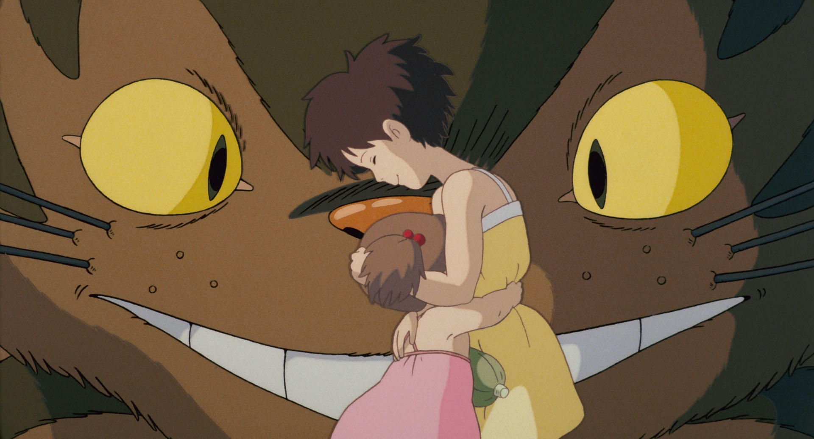
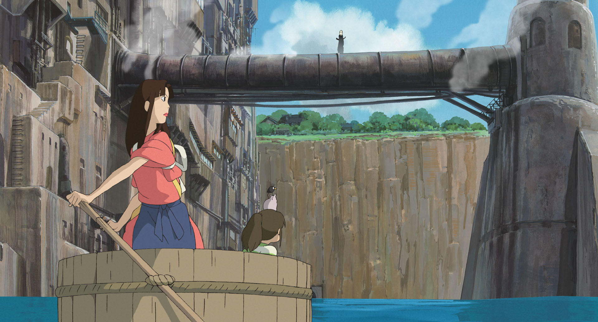
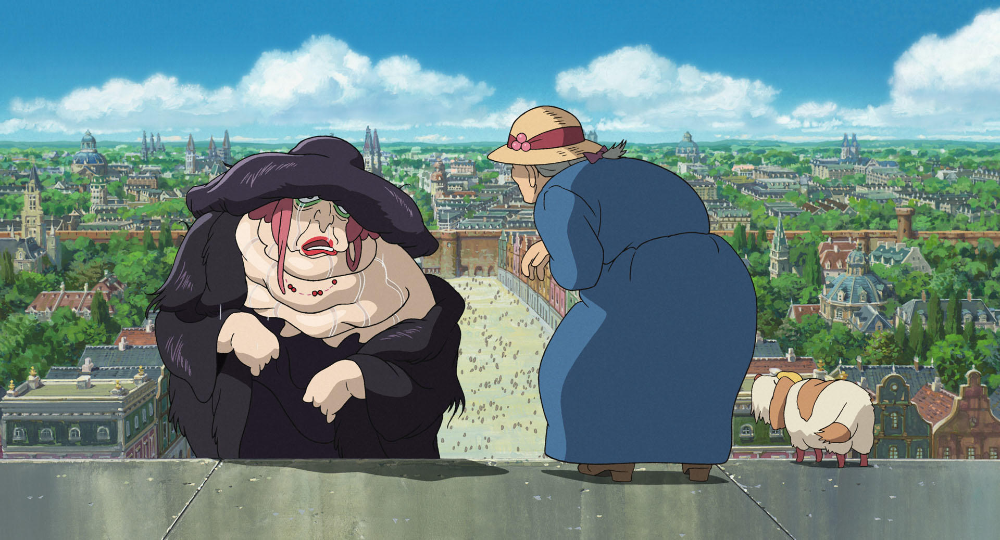
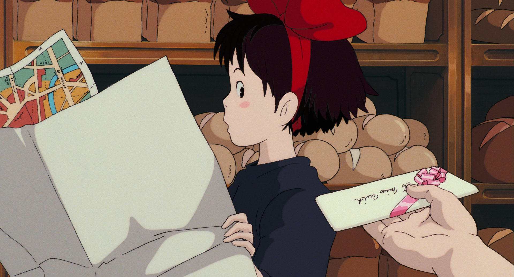

Somewhere Between Dreams and Reality
Step into a world where forests whisper, spirits wander, and every little moment holds a touch of magic.
Featured Masterpieces
Iconic journeys shaped by boundless curiosity, gentle breezes, and timeless heart.
“Always believe in yourself. Do this and no matter where you are, you will have nothing to fear.”
Meet the Spirits
From whispering soot in quiet corners to colossal camphor lords sheltering under the rain.
Explore the Universe
Step through the threshold into four distinct landscapes of nostalgia and fantasy.

Enchanted Forests
Vast camphor groves, moss-covered Shinto shrines, and rain-swept bus stops where ancient spirits slumber.
Enter Grove
Spirit Worlds
The opulent bathhouse of Yubaba, glowing red bridges, and the serene Sixth Station ocean railway train.
Cross Bridge
Floating Castles
Steampunk roaming fortresses walking the Wastes, and ancient Laputa adrift in towering thunderclouds.
Board Castle
Coastal Towns
The terracotta harbors of Koriko scented with bakery dough, and cliffside cottages overlooking ancient Devonian seas.
Wander Harbor